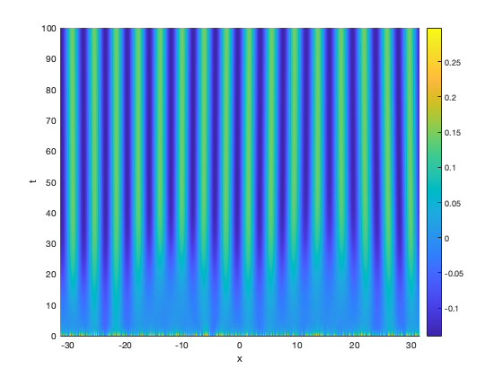

Contents
Clean
clear all, close all, clc;
Questions 1 and 2
See lecture.
Question 3
These are plots and codes in support of the solution, not the full solution
% Parameters mu = 10; theta = 0.5; sigma = 1.5; A = 1; % n = 2^10; L = 10*pi; dx = 2*L/n; x = -L+[0:n-1]'*dx; % Funcion handles for the synaptic kernel wFun = @(x) 1/sqrt(pi)*exp(-x.^2)- 1/(sqrt(pi)*sigma)*exp(-(x/sigma).^2); wHatFun = @(xi) ( exp(-xi.^2/4) - exp(-(xi*sigma).^2/4) ); % Funcion handles for the firing rate function S = @(u) 1./(1+exp(-mu*u+theta)) - 1./(1+exp(theta)); dS = @(u) mu * exp(theta-mu*u)./(1 + exp(theta-mu*u)).^2; % Plot firing rate and kernel figure; x = linspace(-10,10,1000); u = linspace(0,5,1000); subplot(2,1,1); plot(x,wFun(x)); xlabel('x'); legend({'w(x)'}) subplot(2,1,2); plot(u,S(u),u,dS(u)); xlabel('u'); legend({'S(u)','S''(u)'}); % subplot(3,1,3); % plot(xi,wHatFun(xi),xi,gamma*ones(size(xi)),xic,wHatFun(xic),'*'); % xlabel('xi'); legend({'wHat(x)','gamma'});
The kernel is excitatory on short scales, and inhibitory on longer scales. In the neurosciences this is stated to model local excitation, and lateral inhibition. Let's verify that it is a balanced kernel (the quesiton asks to show this analytically)
integral(wFun,-100,100)
ans = -4.4235e-17
Question 4
The quesiton asks to carry out pen-and-paper calculation. Here we show a fe auxiliary graphs.
% Computing maximum of the kernel's Fourier Transform, and critical value of A
xic = sqrt(8*log(sigma)/(sigma^2-1));
wHatc = wHatFun(xic);
Ac = 1/(wHatc*dS(0));
Let us plot the Fourier Transform of the kernel. This graph shows that setting A above A_c gives instability at the critical wavelength
% Plot kernel fourier Transform. figure; xi = linspace(-6,6,1000); plot(xi,wHatFun(xi),... xi, 1/(1.1*Ac*dS(0))*ones(size(xi)),... xi, 1/(0.9*Ac*dS(0))*ones(size(xi)),... [-xic xic],wHatFun([-xic xic]),'*'... ); xlabel('\xi'); legend({'$\hat W_c(\xi)$','1/(1.9 A_c S''(0)',... '1/(0.9 A_c S''(0)'}, 'Interpreter', 'latex');
Question 5
% Parameters mu = 10; theta = 0.5; sigma = 1.5; A = 1.0; % Spatial grid n = 2^10; L = 10*pi; dx = 2*L/n; x = -L+[0:n-1]'*dx; % Form matrix (ring geometry) M = zeros(n,n); y = wFun(x)*dx; iRows = 1:n; iShift = -n/2:n/2-1; for i = 1:n M(iRows(i),:) = circshift(y, iShift(i)); end % Save matrix in .mat format dataPath = '~/GitHub/utrecht-css-mathneuro-masterclass/Data/Ring/'; matFile = fullfile(dataPath,'matrix-M.mat'); save(matFile,'M'); % Save matrix in .dat format datFile = fullfile(dataPath,'matrix-M.dat'); fileID = fopen(datFile,'w'); fmt = [repmat('%15.12f ', 1, size(M, 2)) '\n']; fprintf(fileID,fmt, M'); fclose(fileID); disp(sprintf('Saved file %s',datFile));
Saved file ~/GitHub/utrecht-css-mathneuro-masterclass/Data/Ring/matrix-M.dat
Questions 6, 7
% Form the neural field RHS rhs = @(t,u) -u + A*M*S(u); % Initial condition, and time step u0 = 0.3*rand(size(x)); tspan = [0 100]; [t,U] = ode45(rhs,tspan,u0); % Plot state figure; [X,T]= meshgrid(x,t); surf(X,T,U); view([0 90]); shading interp; xlabel('x'); ylabel('t'); zlabel('u(x,t)'); axis tight; colorbar;
Question 8
% Set parameter A above critical value A = 1.1*Ac; rhs = @(t,u) -u + A*M*S(u); % Initial condition, and time step u0 = 0.3*rand(size(x)); tspan = [0 100]; [t,U] = ode45(rhs,tspan,u0); % Plot state figure; [X,T]= meshgrid(x,t); surf(X,T,U); view([0 90]); shading interp; xlabel('x'); ylabel('t'); zlabel('u(x,t)'); axis tight; colorbar;
Question 9
% Initial condition, and time step u0 = 0.01*cos(xic*x); tspan = [0 100]; [t,U] = ode45(rhs,tspan,u0); % Plot state figure; subplot(2,2,[1 2]) [X,T]= meshgrid(x,t); surf(X,T,U); view([0 90]); shading interp; xlabel('x'); ylabel('t'); zlabel('u(x,t)'); axis tight; colorbar; subplot(2,2,[3 4]) plot(x,u0,x,U(end,:)); xlabel('x'); legend({'$u(x,0)$','$u(x,T)$'}, 'Interpreter', 'latex');
Question 9
AVals = linspace(1,3,50); normVals = zeros(size(AVals)); figure, hold on; for k = 1:length(AVals) A = AVals(k); rhs = @(t,u) -u + A*M*S(u); [t,U] = ode45(rhs,[0 100],u0); normVals(k) = max(abs(U(end,:))); plot(AVals(k),normVals(k),'b*'); drawnow xlabel('x'); ylabel('max | u(x,T) |'); end
The plot is indicative of a supercritical bifurcation (stable small amplitude patterns emerge from the bifurcation)
Question 10
% Paramters mu = 10; theta = 0.5; sigma = 1.5; A = 1.8; % Time step using matrix-vector multiplies rhs = @(t,u) -u + A*M*S(u); u0 = 0.1*rand(size(x)); tic [t,U1] = ode45(rhs,[0 100],u0); toc figure; subplot(2,2,[1 3]); [X,T]= meshgrid(x,t); surf(X,T,U1); view([0 90]); shading interp; xlabel('x'); ylabel('t'); zlabel('u(x,t)'); axis tight; colorbar; % Simulation performed using FFT to evaluate the RHS (see file NeuralField.m) wHat = fft(wFun(x)); p = [theta; mu; A]; rhs = @(t,u) NeuralField(u,p,wHat,dx); tic [t,U2] = ode45(rhs,[0 100],u0); toc subplot(2,2,[2 4]); [X,T]= meshgrid(x,t); surf(X,T,U2); view([0 90]); shading interp; xlabel('x'); ylabel('t'); zlabel('u(x,t)'); axis tight; colorbar;
Elapsed time is 0.191007 seconds. Elapsed time is 0.047695 seconds.